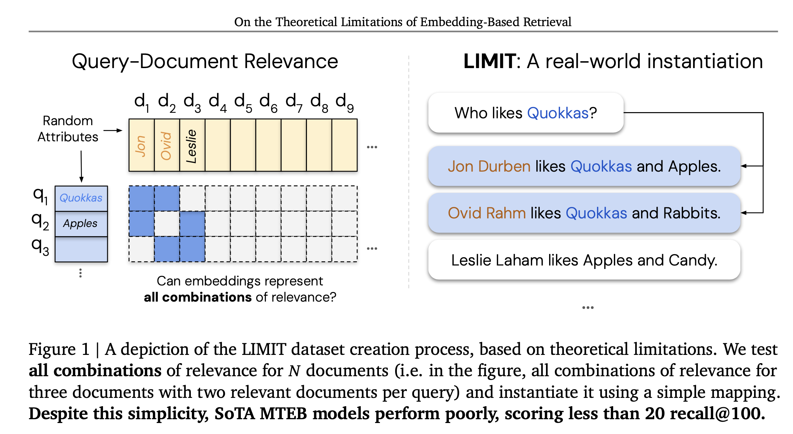
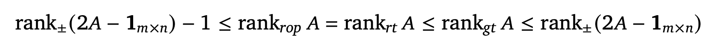
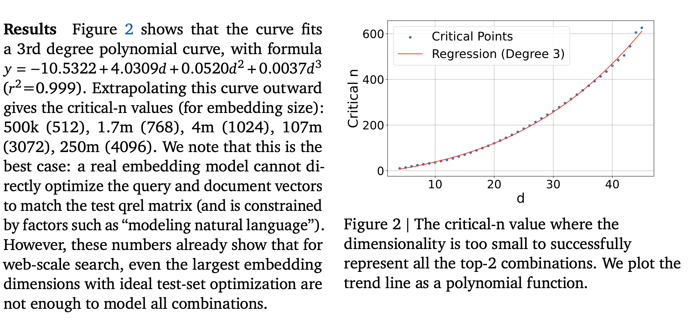
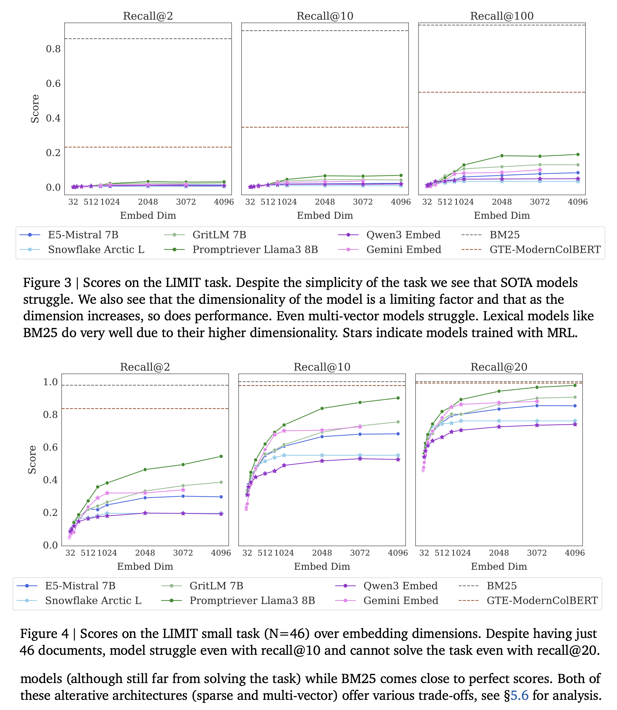

On the Theoretical Limitations of Embedding-Based Retrieval
Neural Embedding Models
- Dense retrieval has gained a lot of traction in the past few years.
- In the era of LLMs, dense retrieval is used for more complicated queries involving conditioning or reasoning.
- The authors focus on finding the limitations of embedding based retrieval by providing a theoretical connection between the embedding dimension and the sign-rank of the query relevance \((qrel)\) matrix.

Representational Capacity of Vector Embeddings
Formalization
- \(m\) queries, \(n\) documents with a ground-truth relevance matrix \(𝐴 ∈{\{0,1\}}_{𝑚×𝑛}\) where \(𝐴_{𝑖𝑗} = 1\) if and only if document \(𝑗\) is relevant to query \(𝑖\).
- Vector embedding models map each query(i) to a d-dimensional vector \(u_i\) and each document to a d-dimensional vector \(v_j\).
- Relevance is modeled by the dot product \(𝑢^Tv\), with the goal that relevant documents should score higher than irrelevant ones. We represent the scores all queries corresponding to all documents in a score matrix \(B=U^TV\)
- The smallest embedding dimension 𝑑 that can realize a given score matrix is the rank of 𝐵. Therefore, finding the minimum rank of a score matrix 𝐵 that correctly orders documents according to the relevance specified in matrix 𝐴
If we consider the relevance matrix A to be a binary matrix for simplicity, then based on the above, we can define the following for finding the theoretical bounds. Bounds for what? Let us see..
- row-wise order-preserving rank (rop): Given a matrix \(𝐴 ∈ ℝ_{𝑚×𝑛}\), the row-wise order-preserving rank of 𝐴 is the smallest integer 𝑑 such that there exists a rank-𝑑 matrix 𝐵 that preserves the relative order of entries in each row of 𝐴.
- row-wise thresholdable rank (rt): minimum rank of a matrix 𝐵 for which there exist row-specific thresholds 𝜏𝑖 such that for all 𝑖, 𝑗, \(𝐵_{𝑖𝑗} > 𝜏_𝑖\) if \(𝐴_{𝑖𝑗} = 1\) and \(𝐵_{𝑖𝑗} < 𝜏_𝑖\) if \(𝐴_{𝑖𝑗}\) = 0.
- globally thresholdable rank (gt): the minimum rank of a matrix 𝐵 for which there exists a single threshold 𝜏 above which all entries in A equals to 1 otherwise 0
Propositions
Based on these definitions, the authors make two propositions.
- Proposition 1: For a binary matrix 𝐴 of size (mxn), \(rank_{rop} 𝐴 = rank_{rt} 𝐴\).
- Proposition 2: If A is a binary matrix, and say \(1_{m \times n}\) is a “ones” matrix, then the sandwich inequality shown below holds, where rank ± is sign rank. A sign rank of a matrix \(𝑀 ∈\{−1,1\}_{𝑚×𝑛}\) is the smallest integer 𝑑 such that there exists a rank \(𝑑\) matrix \(𝐵 ∈ℝ_{𝑚×𝑛}\) whose entries have the same sign as those of 𝑀.

You can prove these literally using pen-paper. But why do we care about these? Well, the authors find a number of consequences: - It provides a lower and upper bound on the dimension of vectors required to exactly capture a given set of retrieval objectives. Given some binary relevance matrix 𝐴, we need at least \(rank±(2𝐴 − 1_{m \times n})\) − 1 dimensions to capture the relationships in 𝐴 exactly, and can always accomplish this in at most \(rank±(2𝐴 − 1_{m \times n})\) dimensions. - There exists a binary relevance matrix which cannot be captured via 𝑑-dimensional embeddings, meaning no matter how large (but finite) you make your embedding dimension, there are always retrieval tasks too complex to be represented exactly.
Empirical Connection: Best Case Optimization
- Free embedding optimization as the vectors can be optimized with gradient descent
- Premise: If the free embedding optimization cannot solve the problem, real retrieval models will not be able to either.
- The authors created create a random document matrix (size 𝑛) and a random query matrix of size m with top-𝑘 sets, both with unit vectors
- Adam optimizer, InfoNCE loss function. The number of documents and the queries are increases gradually till they hit the point where no further improvement is observed. They call this
critical-npoint. - They use \(𝑘= 2\) and increase 𝑛by one for each 𝑑 value until it breaks, and then fit a polynomial regression line to the data

Empirical Connection: Real-World Datasets
- Argue that in the existing datasets like QUEST, BrowseComp, etc., the space of queries used for evaluation is a very small sample of the number of potential queries. For example, the number of unique top-20 document sets that could be returned with the QUEST corpus would be 325kC20 which is equal to \(7.1e+91\). Thus, the 3k queries in QUEST can only cover an infinitesimally small part of the \(qrel\) combination space.
- Proposes the LIMIT Dataset for evaluation. 50K documents, 1000 queries. For each query, they choose to use 𝑘=2 relevant documents both for simplicity in instantiating and to mirror past works
- Though it is hard to find out the hardest \(qrel\) matrix using sign rank, they the \(qrel\) matrix with the highest number of documents (46 in this case) for which all combinations would be just above 1000 queries for a top-𝑘 of 2. There are two versions: one where each query has 46 relevant documents, and 49.95K non-relevant docs, and the second version with only the 46 documents that are relevant to one of the 1000 queries.
- All sorts of embedding models including Qwen-3, Gemini, Mistral, MRL based, etc.
Results
- Models struggle even on the small (46 documents in total) version, struggle to reach even 20% \(recall@100\) and in the 46 document version models cannot solve the task even with \(recall@20\).
- Models trained with diverse instructions do a bit better, but the performance mainly depends on the embedding dimensionality (higher the better).
- The poor performance is not due to domain shift.

What about other kinds of models? Lexical, cross-encoder?
- Sparse models can be thought of as single vector models but with very high dimensionality. This dimensionality helps models like BM25 avoid the problems of the neural embedding models
- Multi-vector models are better then other neural models, but they are not widely used on instruction-following or reasoning-based tasks
- Cross-Encoders are expensive but are much better. For example, Gemini reranker can solve all 1000 queries in a single pass. The problem is these kinds of models can’t be used be used for first stage retrieval when there are large numbers of documents.